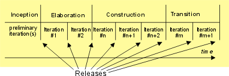

| Concept: Phase |
 |
|
What is a Phase?While the entire purpose of a project is to produce a product, the specific goals of the team in charge of a project vary substantially throughout of the project. In the beginning, there usually is considerable latitude in the requirements for the product. It is also not always clear whether the project is feasible or even if it is likely to be profitable. At that time, it is critical to bring an answer to these questions, and of little of no value to start developing the product in earnest. Similarly, towards the end of the project, the product itself is usually complete, and issues of quality, delivery, and completeness then take center stage. Tasks are undertaken in new ways. Work Products will have new content. To take these fundamental observations into account in the definition of a Delivery Process, UMA recommend dividing the process in a sequence of Phases. Each Phase has its own goals, its own Iteration style and usually customizes its Tasks and Work Products differently. Iteration and PhasesEach phase can be further broken down into iterations. An iteration is a complete development loop resulting in a release (internal or external) of an executable system, usually a subset of the final product under development, which grows incrementally from iteration to iteration to become the product delivered. The Diagram below provides an example of a project decomposition in phases and iterations
 Phases and Iterations exemplified in RUP Releases that coincide with the end of a phase are of greater significance (major releases) that those produced for a mere Iteration (minor). |
© Copyright IBM Corp. 1987, 2005 All Rights Reserved |